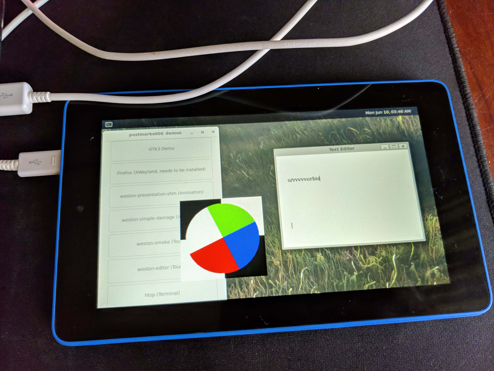

Amazon Fire 7 2015 (amazon-ford)
Jump to navigation
Jump to search
|
 Amazon Fire 7 running Weston and it's demo programs | |
| Manufacturer | Amazon |
|---|---|
| Name | Fire 7 (2015) |
| Codename | amazon-ford |
| Released | 2015 |
| Category | testing |
| Original software | Fire OS 5 (based on Android Lollipop) |
| Hardware | |
| Chipset | MediaTek MT8127 |
| CPU | Quad-core 1.3 GHz Cortex-A7 |
| GPU | Mali-450MP4 |
| Display | 600x1024 IPS |
| Storage | 8GB, expandable up to 256GB with microSD card |
| Memory | 1GB |
| Architecture | armv7 |
{kind=link}
| USB Networking |
Works
|
|---|---|
| Flashing | |
| Touchscreen |
Works
|
| Display |
Works
|
| WiFi | |
| FDE | |
| Mainline | |
| Battery |
Works
|
| 3D Acceleration | |
| Audio | |
| Bluetooth | |
| Camera | |
| GPS | |
| Mobile data |
Unavailable
|
| SMS |
Unavailable
|
| Calls |
Unavailable
|
| USB OTG | |
| NFC | |
| Accelerometer | |
|---|---|
| Magnetometer | |
| Ambient Light | |
| Proximity | |
| Hall Effect | |
| Ir TX | |
|---|---|
| TrustZone | |
Contributors
- reon0
Users owning this device
- Cdde (Notes: Haven't got it to boot PMOS yet)
- Chandi (Notes: Haven't got it to boot PMOS yet)
- Drbugfinder
- H ro
- Joeth (Notes: Haven't got it to boot PMOS yet)
- Reon0
- TheShed412
- Zoomer296
Unlock the bootloader
Before installing pmOS, you will need to unlock your bootloader by following the instructions here: https://forum.xda-developers.com/amazon-fire/development/unlock-fire-t3899860
Entering recovery mode
- Press and hold the power button and the left volume button until the device powers on. The Amazon splash screen should be visible, with the addition of text on the left side of the display reading "=> RECOVERY MODE...".
Installation
Booting into TWRP and flashing a pmOS zip made with 'pmbootstrap install --android-recovery-zip' works. Fastboot has not been tested yet.
What works
- Installing via TWRP
- USB Networking
- Touchscreen (needs configuring, read Issues section)
- Display (works but needs msm-fb-refresher)
- Wayland
- XWayland
- Battery
- USB OTG (tested with USB sound card and external keyboard)
What doesn't work or hasn't been tested
- Wi-Fi (no driver)
- Bluetooth
- FDE
- Audio from the internal speaker and headphone jack
- Cameras
- Anything else that isn't filled in
Kernel compilation issues when using ggow's amazon MT8127 kernel
- virtual_sensor_cpufreq_cooling.c in drivers/thermal needs to be modified to use #include "thermal_core.h" instead of #include <thermal_core.h>
- tpd_debug.c in arch/arm/mach-mt8127/ford/touchpanel needs to be modified to use #include "tpd.h" instead of #include <tpd.h>
- Without these two changes to the kernel source, the kernel will fail to compile.
- The only kernels from ggow's "android_kernel_amazon_mt8127-common" repo that work with these fixes are cm-12.1 and amazon-5364.
- The kernel can only be compiled with gcc6 or gcc4.
- Note: It seems like this no longer works (latest gcc, gcc6 or gcc4 with either branch):
tools/include/tools/be_byteshift.h:4:10: fatal error: linux/types.h: No such file or directory
4 | #include <linux/types.h>
| ^~~~~~~~~~~~~~~
compilation terminated.
Other issues
- The touchscreen will be flipped vertically even though the screen itself is in a horizontal resolution. This can be fixed by creating '/etc/udev/rules.d/90-android-touch-dev.rules' and appending these lines to the file:
ENV{ID_INPUT}="1", ENV{ID_INPUT_TOUCHSCREEN}="1", \
ENV{LIBINPUT_CALIBRATION_MATRIX}="0 1 0 -1 0 1"
- The screen will not refresh on a fresh install. 'msm-fb-refresher' can be installed to fix this issue.